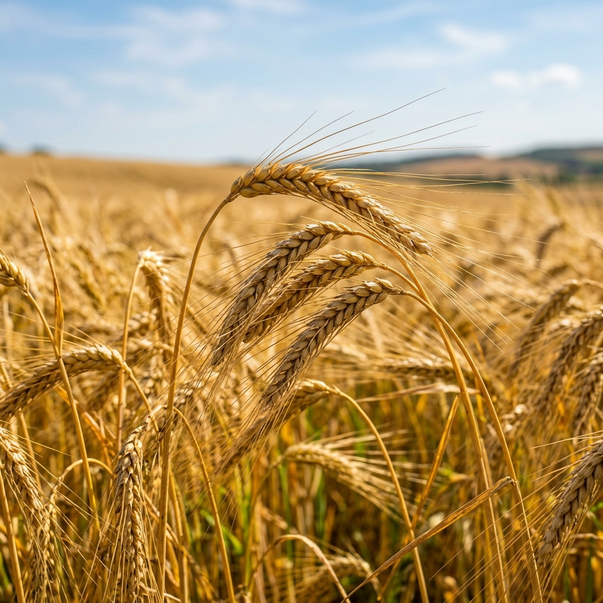
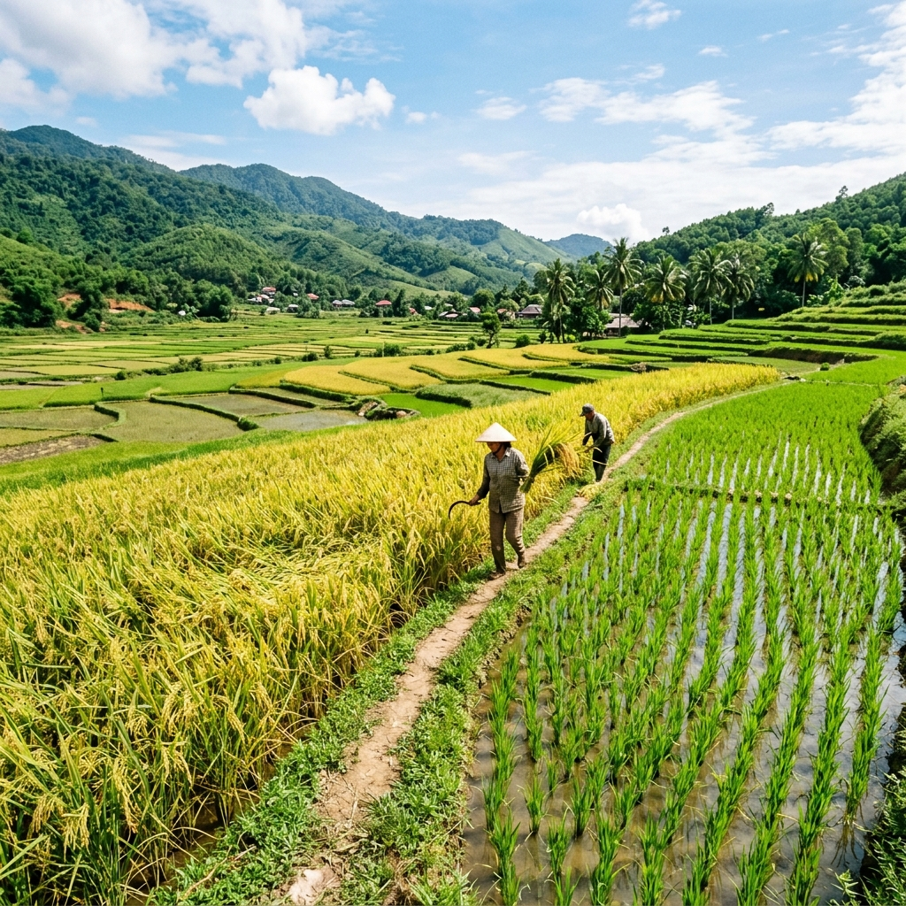
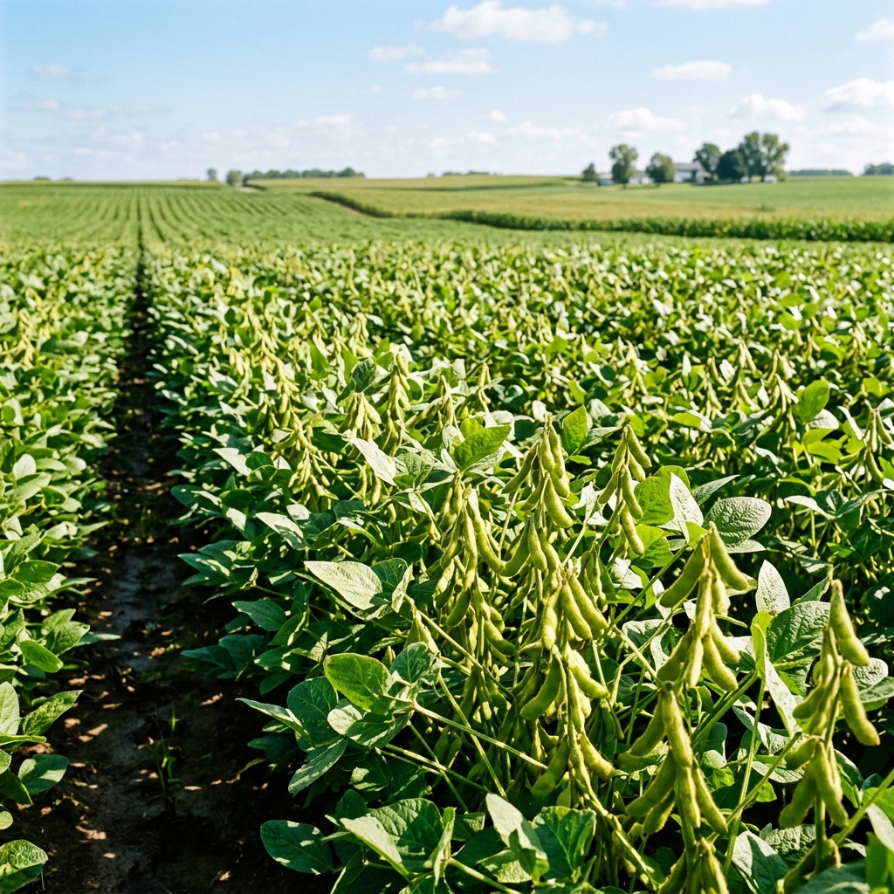
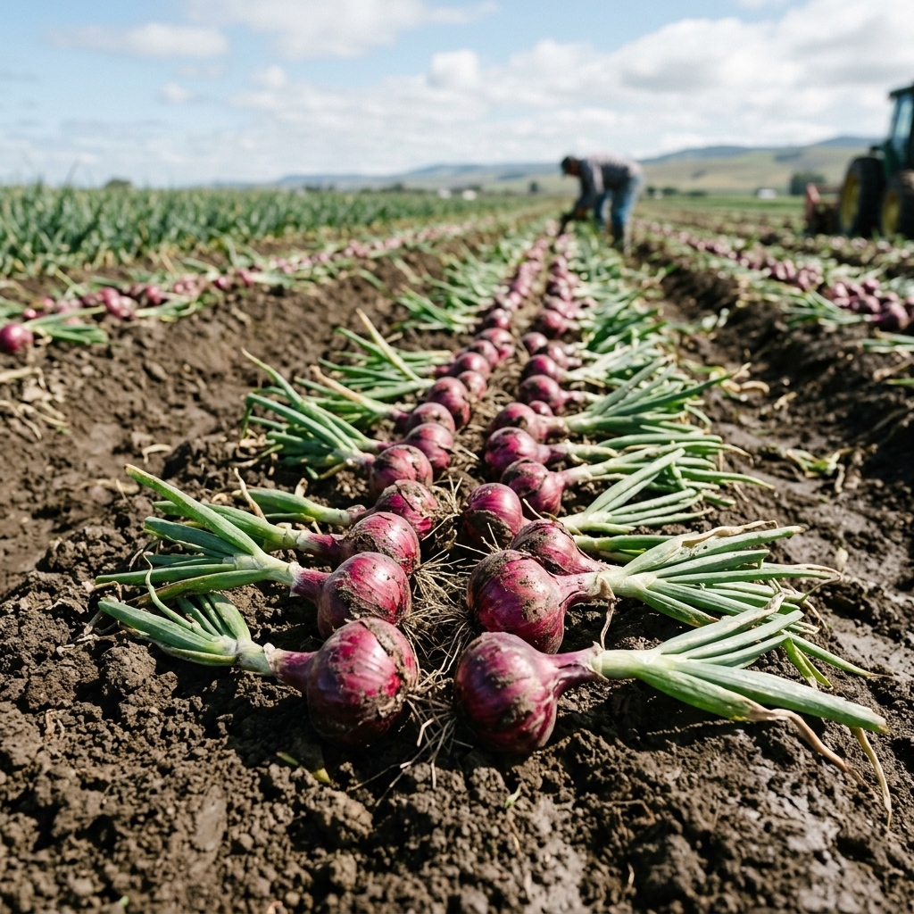
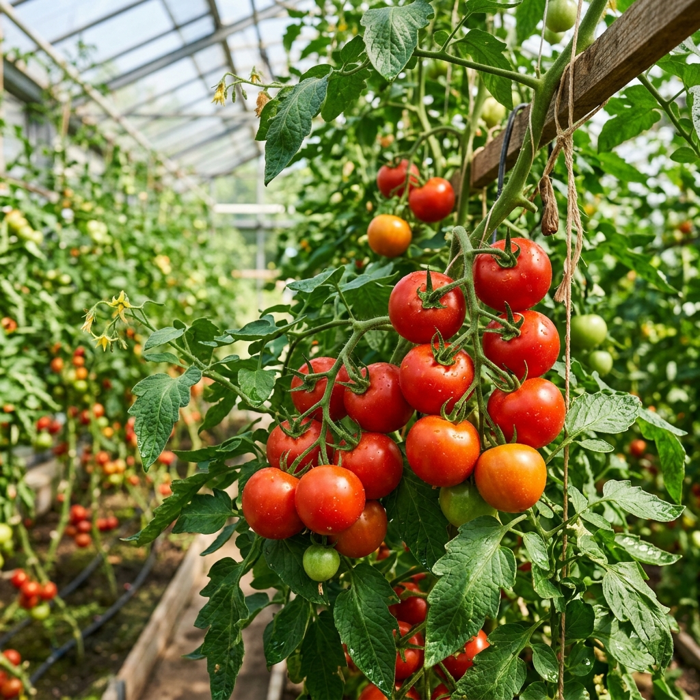
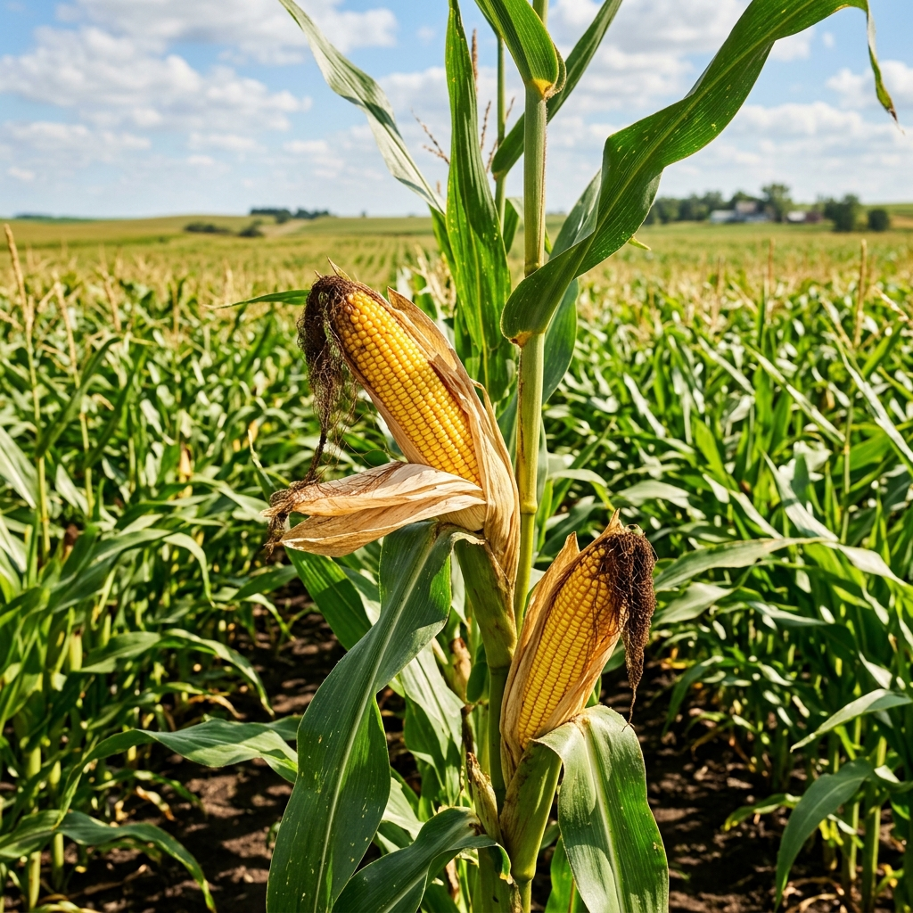
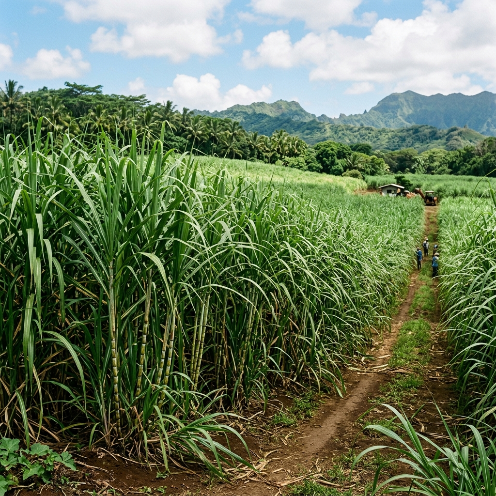

Wheat (Triticum aestivum)
Major cereal grain requiring temperate canopy conditions and moisture during crown root initiation.
Recommended fertilizer:
45 kg/acre
Your dashboard is ready.
Recorded 2 minutes agoWeather information has been checked.
Autonomous routine syncYou have successfully remained on this page.
Session integrity verifiedNo new notifications.
Current baseline statusStandardized agricultural advisory console. Cultivators may query baseline meteorological telemetry, verify soil stoichiometric balances, or initiate computational advisory certificates for notified district zones.
Field traps indicate larval density has exceeded economic injury threshold parameters across vegetative maize and sorghum tracts. Recommended intervention: Neem Azadirachtin 1500 PPM or Emamectin Benzoate 5% SG.
Notice: Seed coats protect the embryo plant from mechanical injury and harsh desiccating elements.
| Anticipated Sky Condition | Precipitation Probability | Day Designation | Evaporation Factor | Max / Min Readings |
|---|---|---|---|---|
| Partly Obscured | 12% | Today | 4.8 mm/day | 33°C / 22°C |
| Scattered Cumulus | 25% | Thursday | 4.1 mm/day | 31°C / 21°C |
| Precipitation Likelihood | 78% | Friday | 2.2 mm/day | 27°C / 19°C |
| Clear & Arid | 5% | Saturday | 5.6 mm/day | 34°C / 23°C |
Comprehensive gazetteer of statutory crops under minimum support and input subsidization.

Major cereal grain requiring temperate canopy conditions and moisture during crown root initiation.

Water-intensive staple crop requiring puddled seedbed preparation and continuous standing layer.
Deep-rooted cash fiber crop prone to sucking pests, pink bollworm, and premature square drop.

Leguminous oilseed fixing nitrogen via rhizobium symbiosis.

Shallow-rooted bulb vegetable highly reactive to photoperiod duration and moisture stress.

High-value solanaceous crop requiring trellising and supplemental calcium to prevent blossom end rot.

Heavy feeder C4 photosynthetic cereal requiring balanced nitrogen application during knee-high stage.

Long-duration perennial crop requiring continuous irrigation intervals and periodic earthing-up.
Recommended for OPTIMAL nitrogen uptake during vegetative STAGE. Apply secondary top-dressing prior to terminal panicle initiation.
DAP: 50 kg/acre + MOP: 25 kg/acre + Zinc Sulphate: 10 kg/acre.
Furrow IncorporatedNeem-Coated Urea: 35 kg/acre under moist field condition.
Broadcast Required| Market Mandi Name ▼ | Commodity Cultivar | Modal Price (₹ / Quintal) | Daily Fluctuation | Arrival Volume | Verification |
|---|---|---|---|---|---|
| APMC Hubli Main Yard | Wheat (Sharbati) | ₹ 2,840 | +₹ 35 | 420 Qtl | |
| Karnal Grain Terminal | Rice (Basmati 1121) | ₹ 4,120 | -₹ 15 | 890 Qtl | |
| Indore APMC Division 2 | Soybean (Yellow Grade) | ₹ 4,820.000000 | +₹ 80 | 1,240 Qtl | |
| Lasalgaon Onion Mandi | Onion (Nasik Red) | ₹ 1,750 | +₹ 110 | 2,600 Qtl | |
| Rajkot Cotton Exchange | Cotton (Shankar-6) | ₹ 7,320 | -₹ 40 | 650 Qtl |